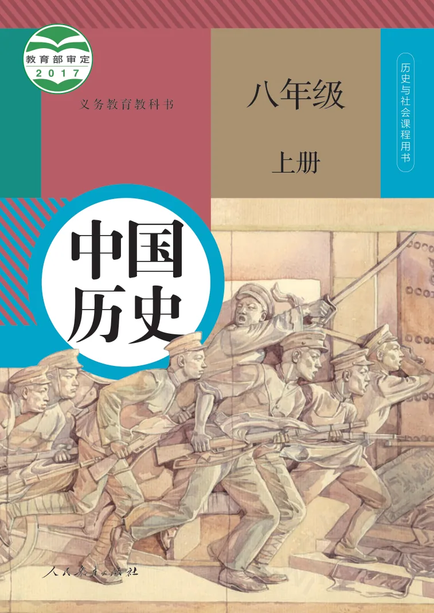
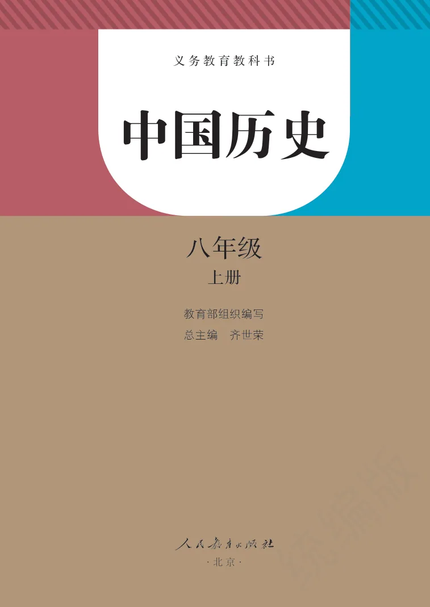
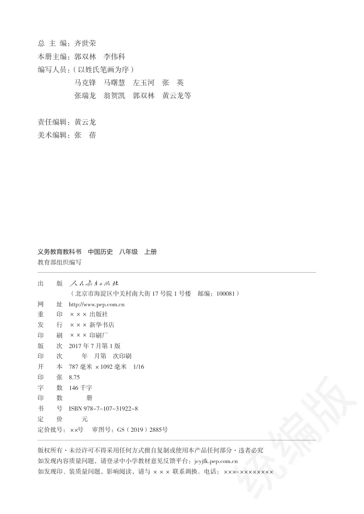
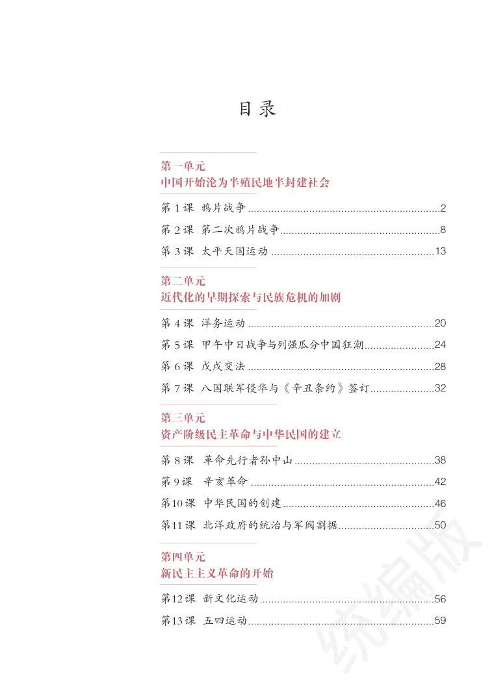
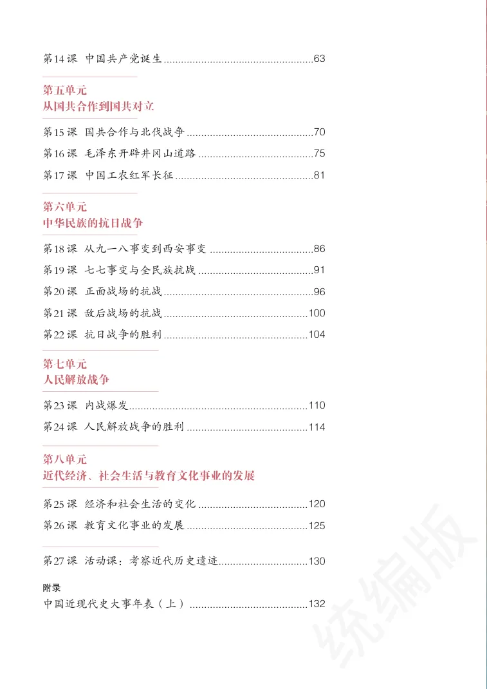
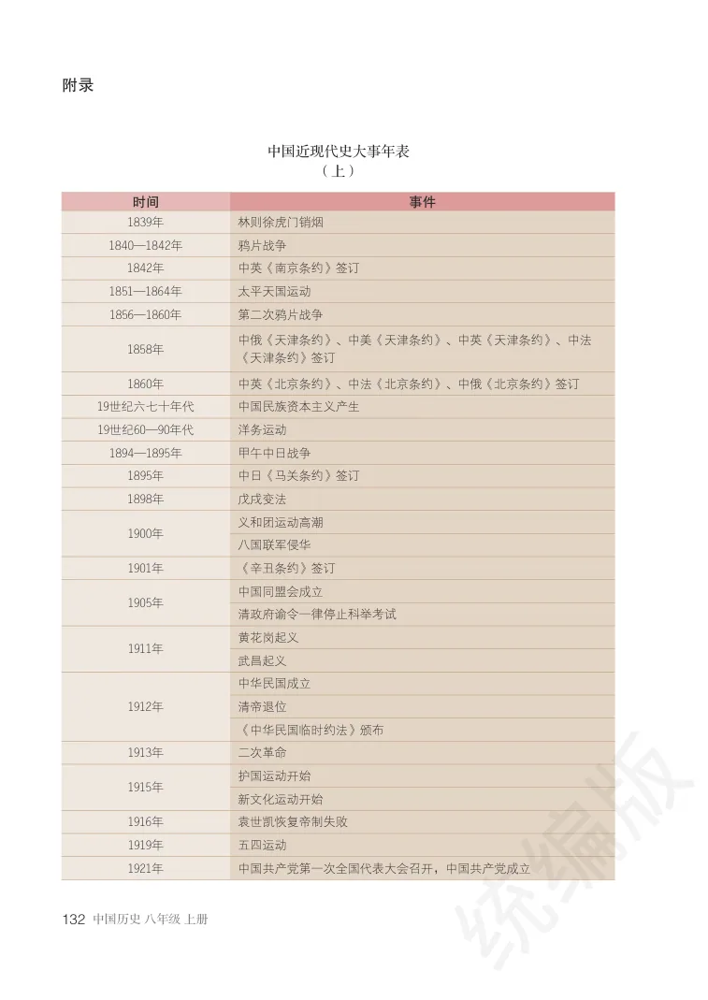
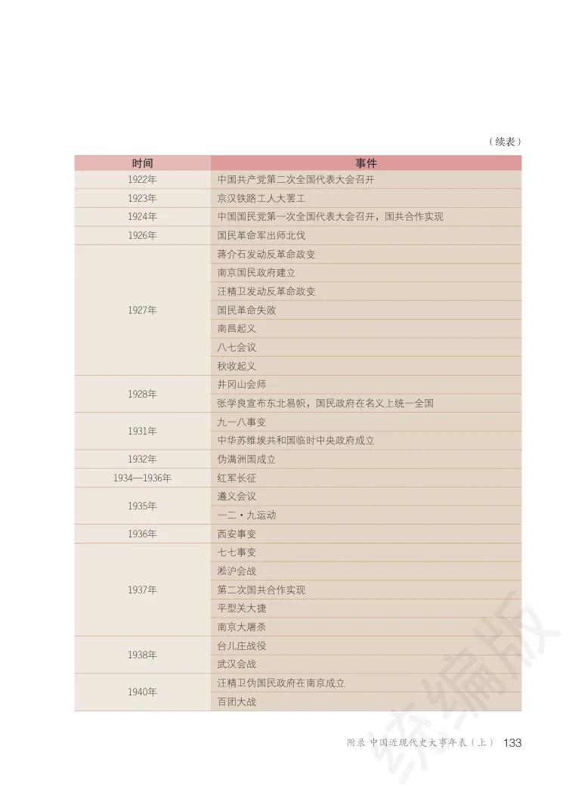
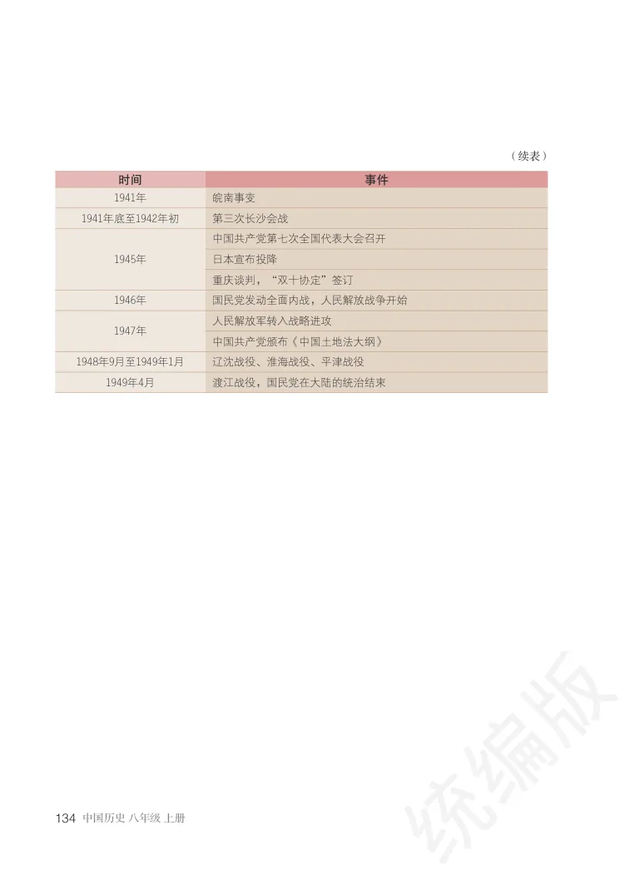
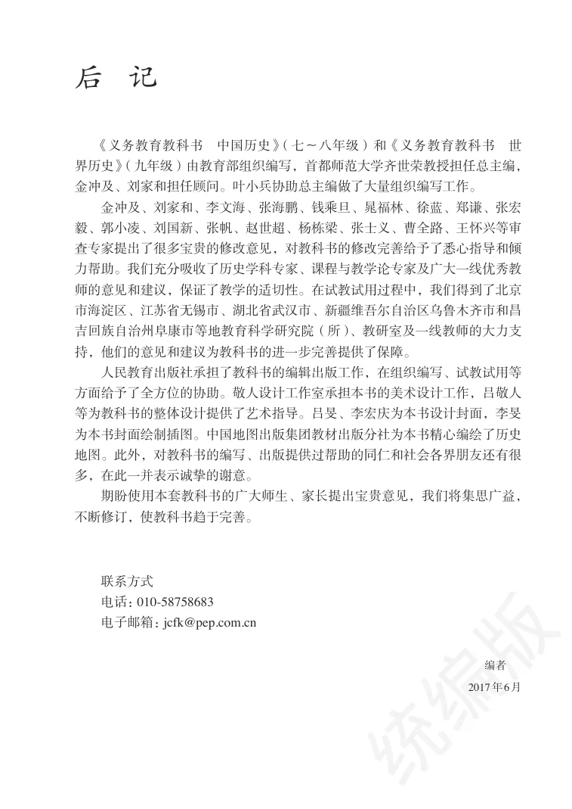
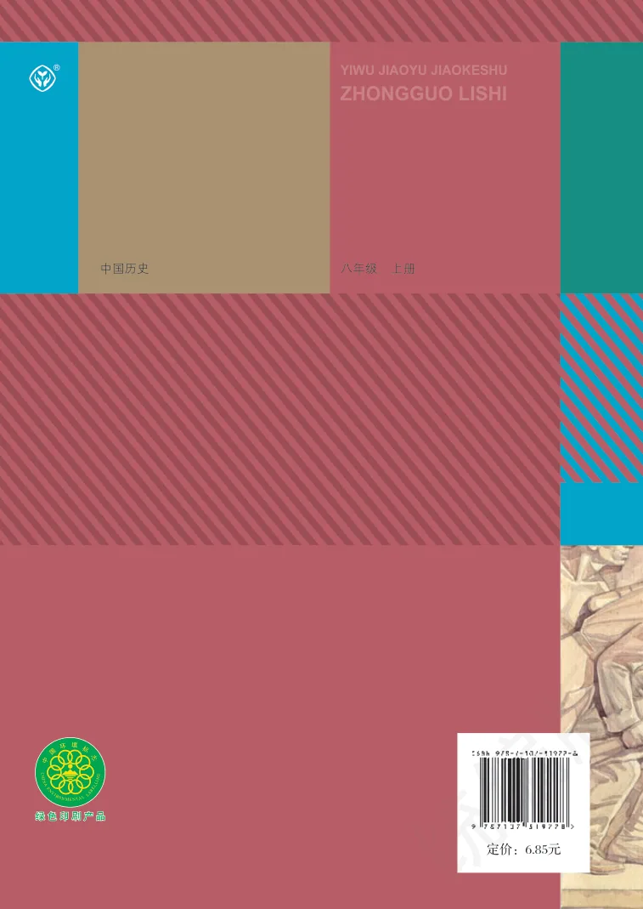

附录
大事年表与前后附页
集中收录中国近现代史大事年表（上），并保存封面、扉页、版权、目录、编写说明和封底等不属于具体教学单元的页面。
PDF 1–5
封面、扉页、版权与目录
PDF 第 1 页查看原书页面
八年级
上册
中国历史
义务教育教科书
历史与社会课程用书
PDF 第 2 页查看原书页面
八年级
上册
中国历史
义务教育教科书
·北 京·
教育部组织编写
总主编 齐世荣
PDF 第 3 页查看原书页面
总主编：齐世荣本册主编：郭双林李伟科编写人员：（以姓氏笔画为序）马克锋马曙慧左玉河张英张瑞龙翁贺凯郭双林黄云龙等
责任编辑：黄云龙美术编辑：张蓓
义务教育教科书 中国历史 八年级 上册
（北京市海淀区中关村南大街17 号院1 号楼 邮编：100081）网 址 http://www.pep.com.cn
开 本 787 毫米×1092 毫米 1/16
书 号 ISBN 978-7-107-31922-8
定价批号：××号 审图号：GS（2019）2885号
版权所有·未经许可不得采用任何方式擅自复制或使用本产品任何部分·违者必究如发现内容质量问题，请登录中小学教材意见反馈平台：jcyjfk.pep.com.cn如发现印、装质量问题，影响阅读，请与××× 联系调换。电话：×××-××××××××
PDF 第 4 页查看原书页面
目录
第１课 鸦片战争...................................................................2第２课 第二次鸦片战争.......................................................8第３课 太平天国运动.........................................................13
第一单元中国开始沦为半殖民地半封建社会
第４课 洋务运动.................................................................20第５课 甲午中日战争与列强瓜分中国狂潮........................24第６课 戊戌变法.................................................................28第７课 八国联军侵华与《辛丑条约》签订......................32
第二单元近代化的早期探索与民族危机的加剧
第８课 革命先行者孙中山................................................38第9课 辛亥革命................................................................42第10课 中华民国的创建....................................................46第11课 北洋政府的统治与军阀割据.................................50
第三单元资产阶级民主革命与中华民国的建立
第12课 新文化运动............................................................56第13课 五四运动................................................................59
第四单元新民主主义革命的开始
PDF 第 5 页查看原书页面
第八单元近代经济、社会生活与教育文化事业的发展
第25课 经济和社会生活的变化.......................................120第26课 教育文化事业的发展...........................................125
第18课 从九一八事变到西安事变.....................................86第19课 七七事变与全民族抗战.........................................91第20课 正面战场的抗战....................................................96第21课 敌后战场的抗战..................................................100第22课 抗日战争的胜利..................................................104
第六单元中华民族的抗日战争
第27课 活动课：考察近代历史遗迹...............................130
附录中国近现代史大事年表（上）..........................................132
第23课 内战爆发..............................................................110第24课 人民解放战争的胜利...........................................114
第七单元人民解放战争
第15课 国共合作与北伐战争.............................................70第16课 毛泽东开辟井冈山道路.........................................75第17课 中国工农红军长征.................................................81
第五单元从国共合作到国共对立
第14课 中国共产党诞生....................................................63
原书页面





PDF 137–139
中国近现代史大事年表（上）
教材第 132 页 · PDF 第 137 页查看原书页面
1858年中俄《天津条约》、中美《天津条约》、中英《天津条约》、中法《天津条约》签订1860年中英《北京条约》、中法《北京条约》、中俄《北京条约》签订
19世纪六七十年代中国民族资本主义产生
1921年中国共产党第一次全国代表大会召开，中国共产党成立
中国近现代史大事年表（上）
附录
教材第 133 页 · PDF 第 138 页查看原书页面
133附录 中国近现代史大事年表（上）
1922年中国共产党第二次全国代表大会召开
1924年中国国民党第一次全国代表大会召开，国共合作实现
张学良宣布东北易帜，国民政府在名义上统一全国
教材第 134 页 · PDF 第 139 页查看原书页面
1941年底至1942年初第三次长沙会战
1946年国民党发动全面内战，人民解放战争开始
1948年9月至1949年1月辽沈战役、淮海战役、平津战役1949年4月渡江战役，国民党在大陆的统治结束
原书页面



PDF 140–141
编写说明与版本页
PDF 第 140 页查看原书页面
《义务教育教科书中国历史》（七〜八年级）和《义务教育教科书世界历史》（九年级）由教育部组织编写，首都师范大学齐世荣教授担任总主编，金冲及、刘家和担任顾问。叶小兵协助总主编做了大量组织编写工作。
金冲及、刘家和、李文海、张海鹏、钱乘旦、晁福林、徐蓝、郑谦、张宏毅、郭小凌、刘国新、张帆、赵世超、杨栋梁、张士义、曹全路、王怀兴等审查专家提出了很多宝贵的修改意见，对教科书的修改完善给予了悉心指导和倾力帮助。我们充分吸收了历史学科专家、课程与教学论专家及广大一线优秀教师的意见和建议，保证了教学的适切性。在试教试用过程中，我们得到了北京市海淀区、江苏省无锡市、湖北省武汉市、新疆维吾尔自治区乌鲁木齐市和昌吉回族自治州阜康市等地教育科学研究院（所）、教研室及一线教师的大力支持，他们的意见和建议为教科书的进一步完善提供了保障。
人民教育出版社承担了教科书的编辑出版工作，在组织编写、试教试用等方面给予了全方位的协助。敬人设计工作室承担本书的美术设计工作，吕敬人等为教科书的整体设计提供了艺术指导。吕旻、李宏庆为本书设计封面，李旻为本书封面绘制插图。中国地图出版集团教材出版分社为本书精心编绘了历史地图。此外，对教科书的编写、出版提供过帮助的同仁和社会各界朋友还有很多，在此一并表示诚挚的谢意。
期盼使用本套教科书的广大师生、家长提出宝贵意见，我们将集思广益，不断修订，使教科书趋于完善。
电话：010-58758683
电子邮箱：jcfk@pep.com.cn
后 记
PDF 第 141 页查看原书页面
本页以版面图像为主，请查看原书页面。
原书页面

PDF 142–142
封底
PDF 第 142 页查看原书页面
ZHONGGUO LISHI
YIWU JIAOYU JIAOKESHU
定价：6.85元
原书页面
